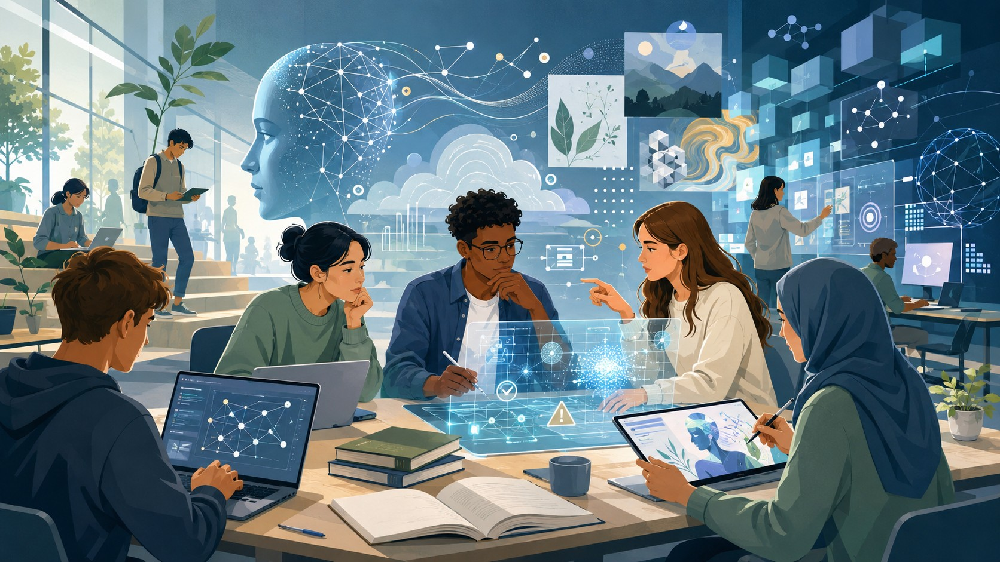

Descrição Acessível de Imagens
Transformar conteúdo visual em informação textual estruturada, objetiva e acessível.

“Ilustração digital colorida, em formato horizontal, que retrata um ambiente moderno de estudo e trabalho colaborativo, com jovens utilizando computadores, tablets e recursos tecnológicos associados à inteligência artificial...”
A descrição organiza a cena do primeiro plano ao fundo, identifica personagens, objetos, relações espaciais, iluminação e elementos gráficos sem depender de uma interpretação subjetiva da intenção da imagem.
Ver descrição completa
Ilustração digital colorida, em formato horizontal, que retrata um ambiente moderno de estudo e trabalho colaborativo, com jovens utilizando computadores, tablets e recursos tecnológicos associados à inteligência artificial. A cena apresenta uma sala ampla, iluminada e futurista, com grandes janelas de vidro à esquerda, pelas quais entra luz natural. A composição utiliza predominantemente tons de azul, verde, branco e cinza, com detalhes luminosos em azul-claro e amarelo.
No primeiro plano, cinco jovens estão reunidos ao redor de uma grande mesa retangular de madeira clara. À esquerda, um rapaz de cabelos castanhos curtos veste um moletom azul-escuro e está sentado diante de um notebook. A tela exibe uma interface escura, com pontos brancos e azulados conectados por linhas, formando uma rede de nós. Ao lado dele, uma jovem de cabelos pretos presos em um coque veste uma blusa verde e apoia o queixo sobre uma das mãos, olhando em direção ao centro da mesa. À sua frente, há um notebook cinza parcialmente aberto.
No centro do grupo, um jovem negro de cabelos curtos e crespos, usando óculos de armação escura, camisa azul e camiseta branca, segura uma caneta sobre a mesa enquanto mantém a outra mão próxima ao queixo. À direita dele, uma jovem de cabelos castanhos longos veste uma blusa branca e aponta o dedo indicador para o centro da mesa. Na extremidade direita, outra jovem usa um hijab azul-escuro e uma blusa verde. Ela segura uma caneta digital sobre um tablet que apresenta a ilustração de um rosto humano em tons de azul e elementos vegetais esverdeados.
Sobre a mesa estão distribuídos notebooks, um tablet, livros empilhados de capas verdes, um livro aberto com páginas brancas, uma caneta azul e uma caneca cinza-azulada. No centro, aparece uma grande interface holográfica semitransparente, composta por linhas geométricas, círculos, gráficos, pequenos símbolos e pontos brilhantes. Entre os elementos visíveis estão um círculo com uma marca de verificação e um triângulo amarelo com ponto de exclamação branco. Uma concentração de partículas luminosas azuladas ocupa a região central do holograma.
No segundo plano, à esquerda, uma jovem de cabelos escuros presos está sentada diante de um notebook sobre uma bancada próxima às janelas. Mais ao fundo, um rapaz de cabelos pretos, vestindo camisa clara, calça azul e mochila escura, permanece em pé sobre uma área elevada, olhando para um objeto retangular que segura nas mãos. Silhuetas de outras pessoas aparecem próximas às janelas e em diferentes pontos da sala.
À direita, uma mulher de cabelos escuros, usando uma blusa clara e calça azul, está em pé diante de painéis digitais transparentes e ergue a mão para tocar uma das interfaces. Mais atrás, um homem de cabelos escuros está sentado diante de monitores sobre uma bancada. Essa região apresenta diversos cubos tridimensionais semitransparentes, painéis retangulares, gráficos circulares, linhas conectadas e diagramas de pontos interligados, todos em tons de azul e branco.
Na região superior esquerda e central da ilustração, destaca-se uma grande cabeça humana representada de perfil, voltada para a esquerda. O rosto é azul-claro, com superfície lisa e aparência digital. A parte superior e posterior da cabeça apresenta uma rede de pontos luminosos interligados por linhas brancas, formando padrões geométricos semelhantes a conexões neurais. Pequenas partículas brilhantes estão espalhadas ao redor dessa estrutura. Linhas curvas e onduladas partem da cabeça e se estendem horizontalmente pela parte superior da imagem, conectando-se visualmente a outros círculos e diagramas.
Atrás da cabeça digital, há formas arredondadas azuladas semelhantes a nuvens, com arcos concêntricos brancos e outras linhas geométricas. Na parte superior direita, vários quadros retangulares apresentam ilustrações distintas: uma paisagem montanhosa com sol claro, folhas e ramos de plantas em tons de verde, estruturas geométricas tridimensionais e um conjunto de linhas onduladas amarelas, azuis e alaranjadas. Também aparecem pequenos símbolos de gotas, redes de pontos conectados e uma grande estrutura esférica formada por linhas brancas e pontos luminosos, próxima à borda direita.
A iluminação é mais intensa no lado esquerdo, onde os raios solares atravessam as janelas e criam faixas claras sobre o piso e os móveis. O lado direito apresenta tons mais escuros de azul, contrastando com o brilho dos painéis digitais. A perspectiva mostra os personagens e objetos maiores no primeiro plano, enquanto os demais elementos diminuem de tamanho em direção ao fundo, reforçando a profundidade da sala. Há pequenas plantas em vasos distribuídas próximo às janelas, nas bancadas e na extremidade direita da mesa.
A imagem não apresenta palavras ou frases claramente legíveis. Seu conteúdo visual reúne pessoas estudando e trabalhando em grupo, uma representação digital da cabeça humana, redes de conexões, hologramas e interfaces computacionais.